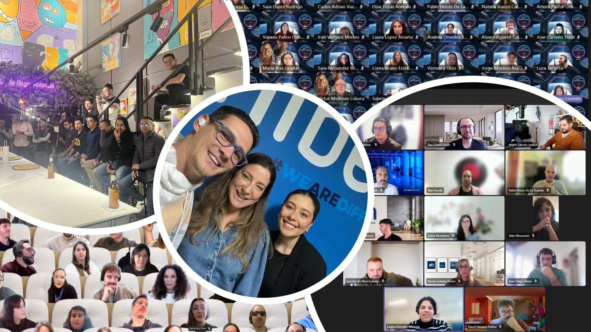

Diego Mena

EXPERTO EN ACCESIBILIDAD DIGITAL
Apasionado por la ciencia y las tecnologías libres.
E-mail:
ingelectronicadj@gmail.com
Contacto:
(+0571) 305 9395154
Hoja de vida en PDF



Ingeniero especializado en desarrollo de productos digitales
accesibles, con experiencia en entornos web e híbridos. Magíster en Gerencia
de Proyectos, con más de 5 años de experiencia en accesibilidad
digital, aseguramiento de calidad (QA) y usabilidad.
Actualmente participa en proyectos internacionales en el
sector fintech y de criptoactivos para clientes en España y
Alemania, aportando en la accesibilidad de sistemas de componentes
utilizados por múltiples aplicaciones web. De forma paralela,
trabaja con entidades gubernamentales en Colombia, realizando
diagnósticos y mejoras de accesibilidad alineadas con la
WCAG 2.2, la Directiva Europea EN 301 549, la
Sección 508 de EE.UU. y la Resolución 1519 de 2020 del
MinTIC para Colombia.
Mi experiencia abarca desde el diseño y
pruebas de accesibilidad, hasta la formación de equipos técnicos y
la elaboración de reportes para cumplimiento normativo, garantizando
altos estándares de calidad e inclusión digital en sectores como
e-learning, fintech, comercio electrónico y gobierno.
Experiencia
Experto en Accesibilidad Digital
Funciones: Realizar evaluaciones de accesibilidad a productos digitales para entornos web e híbridos, alineadas con estándares internacionales como WCAG 2.2 y la normativa europea EN 301 549. Formo parte de un equipo especializado en soluciones fintech y de criptoactivos para los mercados de España y Alemania, contribuyendo a la accesibilidad de todo el sistema de componentes utilizados por diversas aplicaciones web del ecosistema. Identifico áreas de mejora para optimizar la experiencia de usuario y defino estrategias para su implementación. Ejecuto pruebas de calidad (QA) para garantizar el correcto funcionamiento, accesibilidad y usabilidad, asegurando el cumplimiento normativo y altos estándares de calidad en el desarrollo de proyectos.
Experto en Accesibilidad Web
Funciones: Realizar revisiones de accesibilidad en distintos productos digitales y secciones de la sede electrónica de la entidad, aplicando las directrices de la WCAG 2.2 y el Anexo 01 de la Resolución 1519 de 2020 del MinTIC. Lideré la refactorización de todos los componentes del software principal para el registro de patentes en Colombia (SIPI) y la sede electrónica de la SIC, sentando las bases en un sistema de diseño y desarrollo robusto y accesible para futuros desarrollos. Contribuir en la identificación e implementación de mejoras de usabilidad y accesibilidad desde la fase de diseño de interfaces, incluyendo la capacitación a desarrolladores y creadores de contenido. Realizar pruebas de accesibilidad y calidad (QA) para diligenciar instrumentos como el FURAG e ITA.
Gestor Tecnopedagógico
Certificación laboral por 5 años y 4 meses.
Funciones: Aportar en el desarrollo de ambientes virtuales de aprendizaje, auditar recursos educativos digitales en accesibilidad web y desarrollar software para la automatización de procesos.
Algunos proyectos de gran impacto: Lideré el proceso de actualización tecnológica de la Universidad Nacional Abierta y a Distancia en el año 2020, desarrollé todas las vistas de aulas modelo para la oferta de cursos de las distintas facultades y logré automatizar varios procesos para que los docentes pudieran crear cursos con estándares de calidad aportando a la NTC6576. En 2023, gané un reconocimiento institucional por la implementación de un RPA para el apoyo de la gestión tecnopedagógica.
Experto en accesibilidad web
Fortalecer competencias y habilidades en accesibilidad web, a los funcionarios encargados de los portales institucionales y redes sociales de la Contraloría General de la República de Colombia.
Coordinador de educación
Coordinador de la Formación Técnico-Laboral en Programación: Como Coordinador de la ruta de formación técnico laboral en habilidades de programación, orientadas a aplicaciones móviles y web. Supervisar y coordinar todos los aspectos relacionados con la formación, incluyendo la selección de instructores, la planificación de lecciones y la evaluación del desempeño de los estudiantes. Trabajé en estrecha colaboración con el Fondo Único de Tecnologías de la Formación y las Comunicaciones y la Universidad Autónoma de Bucaramanga en virtud del Convenio de Asociación Nro. 743 de 2022.
Educación
Magister en Gerencia de Proyectos
Actividades y asociaciones: Investigación y desarrollo (I+D).
Miembro de la Red de Gestión Tecnopedagógica de cursos y
recursos educativos digitales. Responsable por: Tecnologías de
inclusión y accesibilidad web.
Tesis: Prospectiva de plataforma educativa para la UNAD en zonas de baja o inexistente cobertura a internet.
Especialista en Gestión de Proyectos
Actividades y asociaciones: Investigación y desarrollo (I+D).
Miembro de la Red de Gestión Tecnopedagógica de cursos y
recursos educativos digitales. Responsable por: Tecnologías de
inclusión y accesibilidad web.
Tesis: Desarrollo de herramienta digital para el apoyo de la gestión tecnopedagógica de cursos en el campus virtual de la UNAD.
Ingeniero Electrónico
Actividades y asociaciones: Investigación y desarrollo (I+D).
Exmiembro de los grupos de investigación: GLUD - Grupo Linux
Universidad Distrital, GITUD - Grupo de Telecomunicaciones de la
Universidad Distrital, LASER - Laboratorio de automatizacion,
sistemas embebidos y robótica, TECLIBRE - Semillero de
investigación en tecnologías libres.
Tesis: Sistema Iot para el monitoreo y control de fuentes de luz artificial aplicado a la agricultura de precisión.
Habilidades
Capacidad para la investigación, el autoaprendizaje, la resolución de problemas con creatividad e innovación, capacidad para escuchar a las personas y capacidad de recuperación. Facilidad de expresión oral, liderazgo de equipos, adaptabilidad a entornos laborales bajo presión, habilidades sociales y habilidades ejecutivas para administrar tareas por objetivos.
QA Engineering & Accessibility
Experiencia en aseguramiento de calidad de aplicaciones web mediante pruebas funcionales, pruebas de regresión, validación de criterios de aceptación y análisis técnico del DOM. Especializado en pruebas de accesibilidad integradas al proceso de QA, combinando herramientas automáticas (axe DevTools, ARC Toolkit, IBM Equal Access, Lighthouse, WAVE), inspección técnica (Chrome DevTools, análisis de árbol de accesibilidad y semántica) y pruebas manuales con tecnologías de asistencia (NVDA, JAWS, VoiceOver y Talkback). Experiencia documentando defectos de forma técnica y accionable, análisis de causa raíz y acompañamiento a equipos de desarrollo en la remediación.
Automatización y análisis técnico
Uso de Python para procesamiento de datos, apoyo a tareas de automatización, análisis de resultados de pruebas y generación de reportes técnicos. Experiencia trabajando con estructuras de datos, scripts de apoyo a QA y visualización de resultados mediante visores de datos. Entorno GNU/Linux como base para ejecución de herramientas, pruebas y flujos técnicos.
Base en ingeniería de software y sistemas
Fundamentos sólidos en programación estructurada y orientada a objetos, comprensión de lógica de sistemas y arquitectura de software, lo que fortalece la capacidad de diagnóstico técnico, análisis de defectos complejos y comunicación efectiva para resolver incidencias con equipos de desarrollo.
- Especialista en Accesibilidad Web - Certificado (Se abre en una nueva pestaña)
- Especialista en UX Research - Certificado (Se abre en una nueva pestaña)
- Especialista en Gestión de Proyectos - Certificado (Se abre en una nueva pestaña)
- Scrum Master - Certificado (Se abre en una nueva pestaña)
- Especialista en Soporte de TI - Certificado (Se abre en una nueva pestaña)
- Especialista en Diseño Web Responsive - Certificado (Se abre en una nueva pestaña)
- Nivel de Javascript Avanzado - Certificado (Se abre en una nueva pestaña)
- Especialista en Optimización Web - Certificado (Se abre en una nueva pestaña)
Proyectos
Para ver todos los proyectos consulte mi cuenta Gitlab (Se abre en una nueva pestaña) o mi cuenta Github (Se abre en una nueva pestaña) . Entre los proyectos más destacados se encuentran:
Accesibilidad Web para la Oficina virtual de propiedad intelectual Colombia - SIPI
 Ver oficina virtual
Ver oficina virtual


Intereses
Entre mis intereses profesionales destaco el hecho de poder innovar siempre que sea posible, claramente, sin perder de vista el ciclo de vida de los productos o servicios que se encuentren en producción. Como entusiasta de la informática desde niño, he sido dado a la investigación y el autoaprendizaje, esta fortaleza me ha llevado con el paso del tiempo a formular mejores preguntas y dar con hallazgos interesantes en tecnologías para el internet de cosas, el analisis masivo de datos, la inteligencia artificial y la automatización de procesos.
Me interesa en gran medida aportar en temas de educación y a su vez disminuir la brecha digital. Considero que la educación es un pilar fundamental de la sociedad, y por ello, desde mis capacidades y experiencias aporto en la formación de formadores sobre nuevas herramientas de uso educativo digital.
Desde el análisis de los objetivos de desarrollo sostenible me interesa poder contribuir a la soberanía alimentaria(hambre cero), la educación de calidad, la energía asequible y no contaminante como acción por el clima, así como la conectividad a internet como derecho fundamental. Me interesa mucho aportar significativamente a esa gran red que llamamos internet y me capacito diariamente para ser consecuente con mis intereses.
Enfoque de Investigación y Propuesta Doctoral
Mi propuesta de investigación se centra en la aplicación de Inteligencia Artificial para la auditoría y mejora automatizada de la accesibilidad web en sitios gubernamentales.
Romper el umbral del conocimiento mediante la validación de accesibilidad desde la automatización y la consistencia de casos de prueba; integrando el uso de A11Y PRO SCANNER (Se abre en una nueva pestaña) para auditorías a gran escala bajo normativas internacionales.